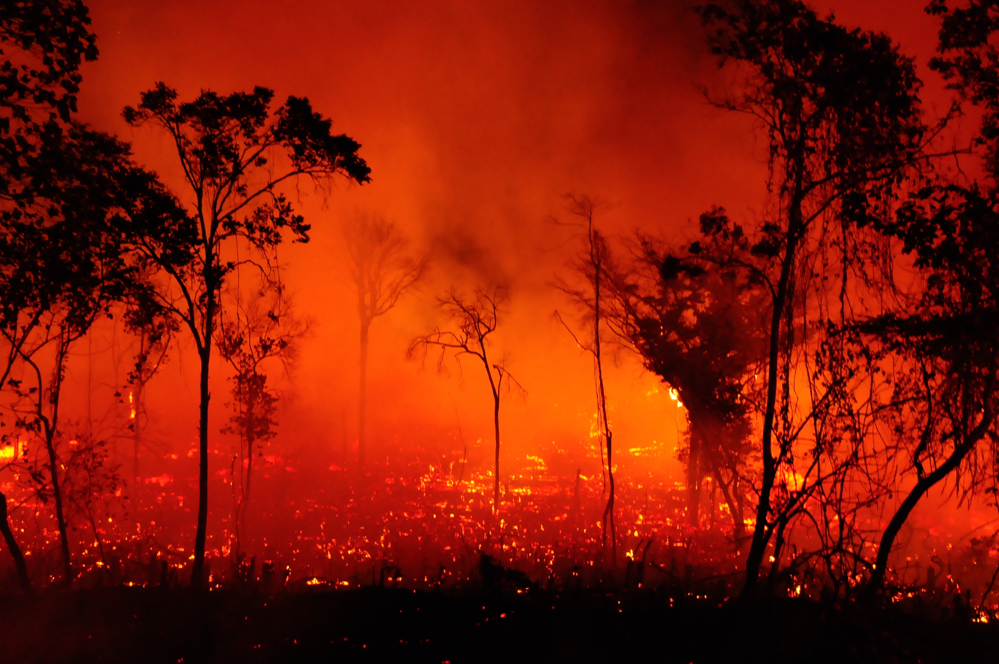
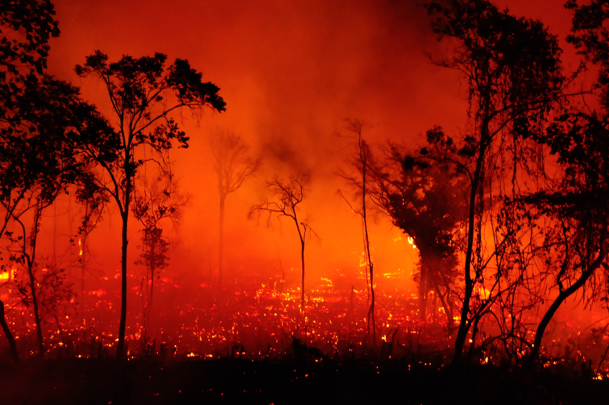

Introdução ao Tema
As queimadas no Brasil são um problema ambiental significativo, especialmente em áreas como a Amazônia, o Cerrado e o Pantanal. Esses incêndios, muitas vezes causados por atividades humanas, como desmatamento ilegal e práticas agrícolas insustentáveis, resultam na destruição de vastas áreas de floresta e biodiversidade, além de contribuírem para o aumento das emissões de gases de efeito estufa. As queimadas afetam não apenas o equilíbrio ecológico, mas também as comunidades locais e a saúde pública, devido à poluição do ar e à degradação dos recursos naturais. A gestão e a prevenção dessas queimadas são desafios que envolvem políticas públicas, fiscalização ambiental e conscientização da sociedade.
Imagens de Destaque
 
